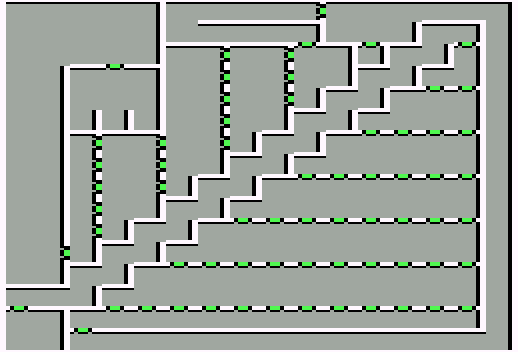

Evil Sorcerer's castle
| X | Y | Event |
| 1 | 0 | All that are even are less but odd. All that are odd become more odd. |
| 12 | 11 | It is One |
| 10 | 9 | It is lareger thatn one but less than a crowd. |
| 8 | 7 | Octal is the one |
| 6 | 5 | The largest prime |
| 4 | 3 | Biggest is the best |
| 11 | 13 | The lettered doors should be read in reverse. |
| 10 | 12 | Do you see the light. |
| 8 | 10 | Do you see the light. |
| 6 | 8 | Vowels are winners |
| 4 | 6 | The first letter in eye. |
| 3 | 10 | Ybmug |
| 4 | 10 | Left lock 23 |
| 2 | 10 | Right lock 46 |